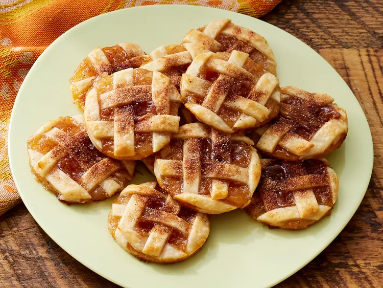

Caramel Apple Pie Cookies

Description
These Caramel Apple Pie Crust Cookies are
pinwheel cookies made with a cream cheese pie
crust, filled with the perfect combination of
apple on top of a cinnamon/sugar mixture and
drizzled with caramel sauce. They're the
perfect treat for your Fall baking list and a
delicious recipe to make during apple season.
Ingredients
- 1 (14.1-ounce) package rolled refrigerated
unbaked pie crusts (2 crusts)
- 1 cup purchased apple pie filling
- 1/4 cup caramel sauce
- 1 tablespoon sugar
- 1/4 teaspoon apple pie or ground cinnamon
- 1 tablespoon half and half
Steps
-
Gather all ingredients. Preheat oven to 425 degrees F (220 degrees C). Let pie crusts stand according to package directions. Line 2 baking sheets with parchment paper; set aside.
-
Transfer apple pie filling into a food processor. Lightly pulse apple pie filling in a food processor until in 1/4-inch chunks (see Cook's Note).
-
Roll one pie crust into a 14-inch circle on a lightly floured piece of parchment paper.
-
Using a pizza cutter or a sharp knife, cut 1/4-inch wide strips.
-
Cover cut pie dough with parchment paper or plastic wrap and set aside.
-
Roll remaining pie crust dough into a 13-inch circle on lightly floured piece of parchment paper.
-
Spread caramel sauce over rolled pastry.